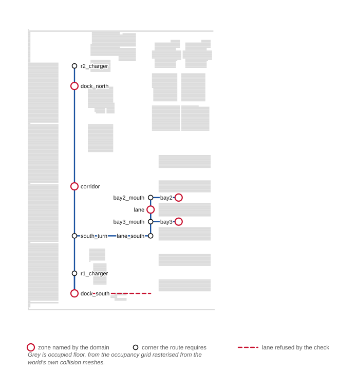
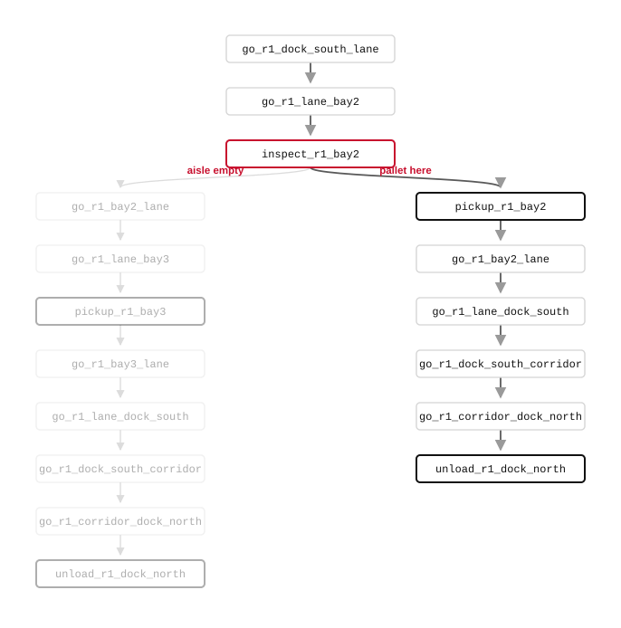
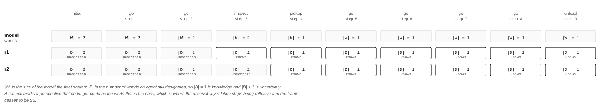
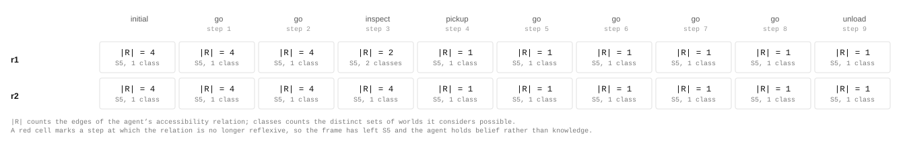

Open-RMF · AWS small warehouse · ROS 2
The warehouse mission of robot-warehouse was executed over an Open-RMF fleet in the AWS RoboMaker small warehouse, a world with no traffic-editor description and no RMF assets of its own. The navigation graph and the building map were derived from the same constants the rest of the repository reads its floor plan from, and both were validated against the occupancy grid before use. The run completed in nine actions with no traffic negotiation failures, and every agent's accessibility relation remained reflexive throughout.
Domain and instance from epddl-workspace/robot-warehouse, unmodified. Planned by Aletheia, executed by eplansys, dispatched by eplansys-rmf.
The problem
A pallet stands in one of two aisles, bay2 and bay3. Its location is settled and unknown to the fleet, so the initial model has two worlds and designates both. Two agents participate: r1, which comes on shift at shipping, and r2, which waits at receiving and never moves.
(:goal (and (delivered)
([Kw. r2] (pallet-at bay2))))The first conjunct is ontic. The second requires the stationary agent to come to know which aisle held the pallet. The pickup action carries a modal precondition, ([?i] (pallet-at ?z)), so a robot may lift the pallet only where it knows the pallet to be, and any plan that satisfies the goal contains an inspection.
Inspection is semi-private-sensing: the fleet observes that an aisle was inspected and does not observe the result. Movement and pickup are public-ontic. The domain also supplies a public announcement, which the policy for this instance leaves unused for reasons the measurement below makes clear.
The environment
Open-RMF obtains its navigation graph from a traffic-editor .building.yaml, which also generates the Gazebo world. The AWS small warehouse exists already and has no such description, so both artefacts were generated in the world's own metres from the constants in warehouse_scenario/include/warehouse_scenario/warehouse.hpp. The zones RMF routes between are then the zones the μ-calculus planner routes over.
The building map is required even though the warehouse has one level, no doors and no lifts. The slotcar plugin queries the building map server for the level a robot occupies, and it publishes no robot state without an answer, so an absent map leaves RMF with no fleet at all.

A first version of the graph ran a lane east along the south wall, joining dock_south to the service lane by the shortest path on the plan. That lane crosses the rack block. The consequence in simulation was quiet: RMF accepted the task, the robot drove to within 0.75 m of the shelving, which is its configured stop_radius, and stopped. The task neither completed nor failed, and the bridge waited until its timeout.
The graph generator now takes the occupancy grid as an argument and refuses to emit a graph whose waypoints or lanes intersect occupied floor. A scan for east–west corridors clear over the whole span from the west corridor to the service lane returns two bands, at \(y = -8.9\) and \(y \in [-5.6,\, 0.9]\); the crossing is placed at \(y = -5.0\), inside the wider one.
A second constraint was added after a second failure. Each robot claims a vicinity radius of 0.5 m in addition to its footprint, so two robots require about a metre between their centres. With r2 parked on dock_north, which is where r1 delivers, RMF logged Failed negotiation 102 times over four minutes and never failed the task. The generator now requires 1.4 m between every parking spot and every zone.
A zone in the epistemic domain is a region several agents occupy at once, and a waypoint in RMF admits one robot. Both statements about r2 are true simultaneously: the model places it in zone dock_north and the fleet parks it 1.5 m away.
Execution
Aletheia solved the instance by AO* at depth 11, expanding 1 448 279 nodes and generating 1 459 711. The executor rendered a policy of seventeen nodes. Nine actions were dispatched before the goal held, over 172.5 s of wall-clock time, with no negotiation failures.

| step | action | execution | |W| | |D| r1 | |D| r2 |
|---|---|---|---|---|---|
| 0 | initial state | — | 2 | 2 | 2 |
| 1 | go dock_south → lane | 40.7 s | 2 | 2 | 2 |
| 2 | go lane → bay2 | 15.3 s | 2 | 2 | 2 |
| 3 | inspect bay2 | 6.0 s | 2 | 1 | 2 |
| 4 | pickup bay2 | 6.0 s | 1 | 1 | 1 |
| 5 | go bay2 → lane | 16.0 s | 1 | 1 | 1 |
| 6 | go lane → dock_south | 39.5 s | 1 | 1 | 1 |
| 7 | go dock_south → corridor | 20.5 s | 1 | 1 | 1 |
| 8 | go corridor → dock_north | 19.5 s | 1 | 1 | 1 |
| 9 | unload dock_north | 6.0 s | 1 | 1 | 1 |
Motion accounts for 151.5 s of the 172.5 s. The inspection that settles the mission's uncertainty occupies six seconds, and the aisle it enters was reached in the preceding 56.
Measurement
The run was replayed against a standalone epistemic state and each agent's perspective was measured after every action.

The model contracts. It has two worlds until step 4 and one thereafter, and the transition occurs at the pickup. Uncertainty is resolved twice and by two different mechanisms. At step 3 the inspection settles the aisle for r1 alone, which is what semi-private sensing provides: the other agent observes that an inspection occurred. At step 4 the pickup settles it for both, because a public ontic action whose precondition names the aisle discloses the aisle to every observer.
| formula | initial | 1 | 2 | 3 | 4 | 5–8 | 9 |
|---|---|---|---|---|---|---|---|
| delivered | F | F | F | F | F | F | T |
| (Kw r1 pallet-at_bay2) | F | F | F | T | T | T | T |
| (Kw r2 pallet-at_bay2) | F | F | F | F | T | T | T |
The second goal conjunct is satisfied at step 4 by an agent that never moved and never communicated. This accounts for the absence of the announcement from the policy: the public pickup already discloses what an announcement would say, and the planner spends no action on it. A third agent, or an instance in which the inspection returns an empty aisle, changes that, and the three-robot instances in robot-warehouse measure the difference.

Figure 6. Each agent's accessibility relation, stepped through the run. Every world keeps its self-loop at every step, which is the \(\mathrm{S5}_n\) condition holding throughout.
Every relation in this run is reflexive at every step, so the frame is \(\mathrm{S5}_n\) from beginning to end and no agent holds a belief the world contradicts. Every action here is public or semi-private, and the information available to an agent grows monotonically. The hotel incident admits private ontic change and private announcement, and its measurement shows both the model growing and two agents ending outside the actual world.
Reproduction
ros2 launch warehouse_rmf_demo warehouse_rmf_launch.py
ros2 launch warehouse_rmf_demo warehouse_rmf_launch.py pallet:=bay3The argument selects the aisle the pallet occupies, and the two values drive the policy down its two branches. The world is the AWS RoboMaker small warehouse, launched unmodified, with RMF's robots spawned into it.
python3 tools/make_nav_graph.py \
--map ../warehouse_scenario/maps/aws_small_warehouse.yaml \
--out maps/nav_graphs/0.yaml
python3 tools/make_building_map.py \
--nav-graph maps/nav_graphs/0.yaml \
--out maps/aws_small_warehouse.building.yamlThe graph generator exits with an error listing every waypoint and lane that intersects occupied floor, and every parking spot closer to a zone than two robots can stand. The building map is derived from the graph, so the two cannot disagree.